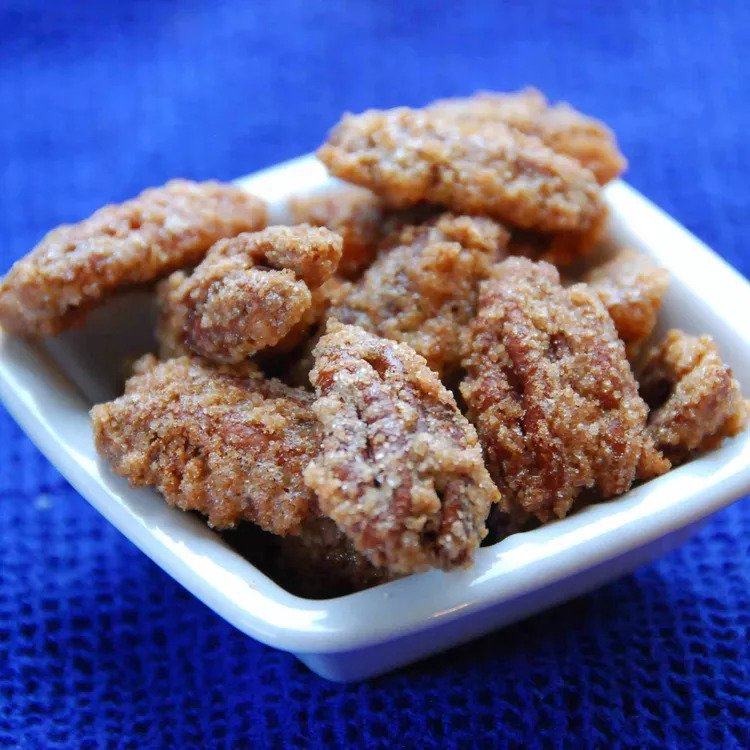

Sugar coated pecans

Description
These sugar-coated pecans are wonderful snacks for any occasion.
General facts
- Prep Time: 10 mins
- Cook Time: 1 hrs
- Total Time: 1 hrs 10 mins
- Servings: 12
- Yield: 1 pound
Ingredients
- cooking spray
- 1 egg white
- 1 tablespoon water
- 1 cup white sugar
- ¾ teaspoon salt
- ½ teaspoon ground cinnamon
- 1 pound pecan halves
Directions
- Preheat the oven to 250 degrees F (120 degrees C). Grease a baking sheet with cooking spray.
- Whisk together egg white and water in a medium bowl until frothy. Mix together sugar, salt, and cinnamon in a separate bowl.
- Add pecans to egg white mixture; stir to coat. Transfer pecans to sugar mixture; toss to coat. Spread pecans out on the prepared baking sheet.
- Bake in the preheated oven until crisp, about 1 hour; stir every 15 minutes.
Return to the main page